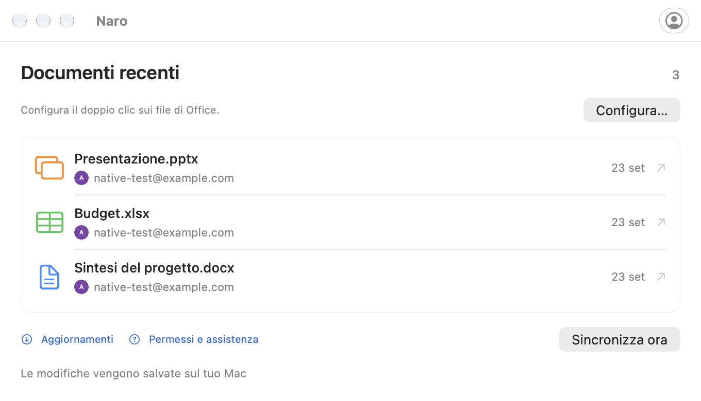

Collega il tuo account Google.
Accedi tramite il browser, quindi imposta Naro come app predefinita per i tuoi file di Office nelle impostazioni dell'account.
File di Office, connessi su macOS
Naro è un'app macOS che apre i file Word, Excel e PowerPoint in Documenti, Fogli e Presentazioni Google, quindi sincronizza le modifiche salvate sul tuo Mac mentre l'app è in esecuzione e online.
Disponibile per Apple Silicon · macOS 26 o versione successiva
Meno passaggi. Più fluidità.
I tuoi file recenti. I tuoi account Google. Un luogo familiare dove riprendere da dove eri rimasto.
Uno sguardo più da vicino
Un inizio familiare
Il solito doppio clic, con gli editor di Google dall'altra parte.
Accedi tramite il browser, quindi imposta Naro come app predefinita per i tuoi file di Office nelle impostazioni dell'account.
Naro carica il file sul tuo Google Drive e apre l'editor corrispondente. Con più account, scegli prima un avatar.
Mentre Naro è in esecuzione e online, controlla le modifiche salvate di Google e le riscrive localmente, mantenendo un backup.
Tre redattori. Un'applicazione.
Documenti, fogli di calcolo e presentazioni. Fino a 100 MB per file.

Da un documento locale a Google Docs.
DOC · DOCX
Apri i tuoi fogli di calcolo in Fogli Google.
XLS · XLSX
Porta le tue presentazioni in Presentazioni Google.
PPT · PPTXCollega l'account Google che desideri utilizzare per i tuoi documenti. Naro utilizza il tuo nome, email e immagine del profilo per mostrare gli account collegati e aiutarti a scegliere quello giusto. Naro non riceve mai la tua password Google.
Quando apri un file di Office locale con Naro, il file viene caricato su Google Drive e si apre l'editor di Google nel tuo browser. L'accesso a Drive consente a Naro di recuperare le modifiche salvate e sincronizzarle nuovamente sul tuo Mac. L'accesso è limitato ai file creati da Naro o condivisi esplicitamente con esso, non all'intero Drive.
I documenti viaggiano direttamente tra il tuo Mac e Google. Naro non dispone di un server gestito dagli sviluppatori che riceve i tuoi documenti. I token di accesso rimangono nel portachiavi macOS.
Un aiuto quando serve
Brevi guide per il tuo primo file,
il tuo prossimo account e tutto sarà sincronizzato.
Primi passi
Collega Google, imposta l'apertura dal Finder e inserisci il tuo primo documento nel browser.
Account Google
Aggiungi un altro account e scegli dove inserire ogni documento con il selettore avatar compatto di Naro.
Salvataggio e sincronizzazione
Comprendi il salvataggio locale, i backup e cosa fare quando un file cambia in due posti.
Da sapere
Sì. Scarica Naro da GitHub Releases, oppure installalo con Homebrew:
brew install --cask plexideas/tap/naro. Il download non ha la firma dell'ID sviluppatore Apple, quindi macOS potrebbe richiedere di consentire esplicitamente il primo avvio.
La modifica avviene in Documenti, Fogli o Presentazioni Google nel tuo browser. Naro gestisce l'apertura dei file dal Finder, la scelta di un account e il ripristino delle modifiche salvate da Google sul tuo Mac.
Naro mantiene entrambe le versioni e chiede con quale continuare. Effettua anche backup locali prima di sostituire un documento. Mantieni Naro in esecuzione e connesso a Internet per la sincronizzazione.
La compatibilità dipende dagli editor di Office di Google. La formattazione complessa, le macro e altre funzionalità avanzate potrebbero non essere conservate. Se Google aggiorna un vecchio file DOC, XLS o PPT, Naro salva una copia in formato moderno insieme all'originale. La conversione di un file in un documento nativo di Google separato non viene tracciata dal collegamento al file originale.
Naro supporta i Mac Apple Silicon con macOS 26 o versioni successive. L'app può verificare la presenza di aggiornamenti nelle versioni GitHub. Scegli quando scaricare, installare e riavviare dalla finestra di aggiornamento.